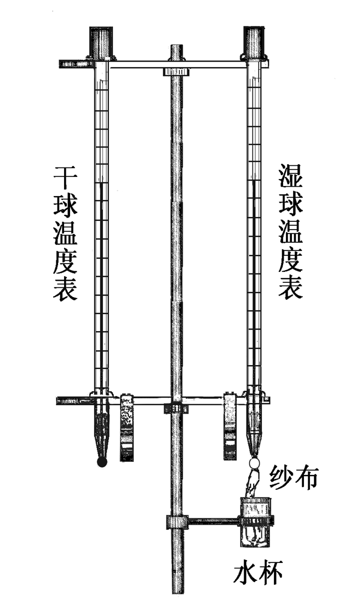
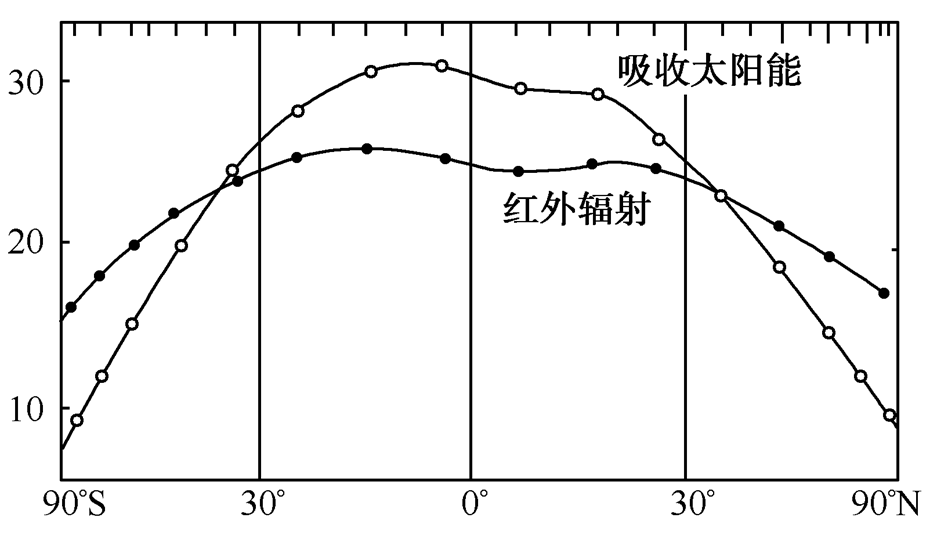
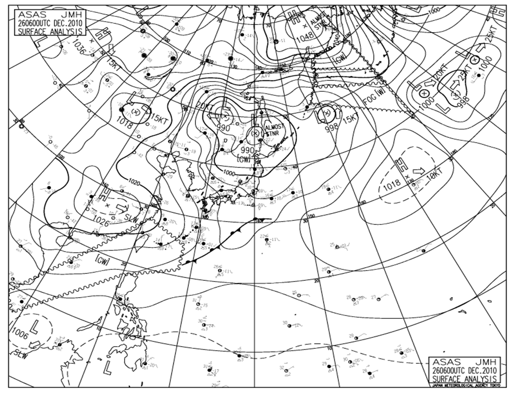
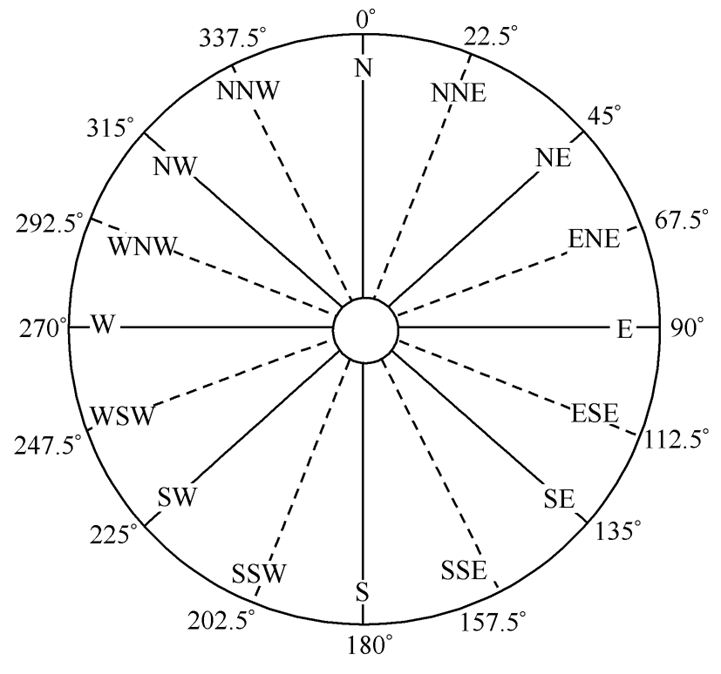
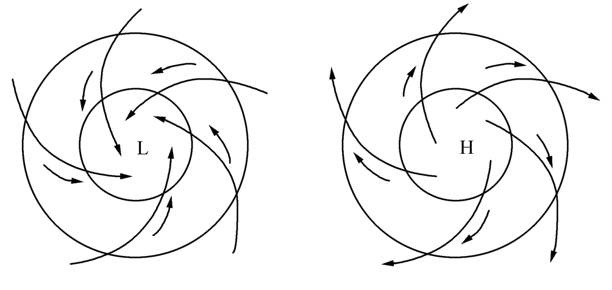

航海气象-气象
1. 大气概况
大气（Atmosphere）：包围地球表面的整个大气层。
气象要素（Meteorology elements) ：反映大气状态的物理量或物理现象，主要有：气温、气压、风、湿度、云、能见度和天气现象。
天气 (Weather)：指一定区域在较短时间内各种气象要素的综合表现。天气表示大气运动的瞬时状态。
气候 (Climate)：指某一区域天气的多年平均特征，其中包括各种气象要素的多年平均及极值。气候表示长时间的统计平均结果。
1.1 大气成分
大气主要由多种气体(氮、氧、氩、二氧化碳和臭氧等)、水汽和悬浮的杂质构成。 干空气（Dry air）:除水汽和杂质以外的混合气体。
干空气主要成分:氮（78.09%）、氧(20.95%）、氩（0.93%）三项约占总体积的99.97% 。
次要成分:二氧化碳（0.03％）、氢、氖、氦、氪、氙、氡、臭氧等稀有气体（ 0.01％）。
影响天气、气候变化的主要大气易变成分为二氧化碳、臭氧和水汽
二氧化碳（carbon dioxide）:平均含量0.03%,若达到0.2％以上，就对人体有害。二氧化碳能强烈地吸收和放射长波辐射，对地面和大气的温度分布有重要影响，类似温室效应，直接影响气候变迁。含量城市多于农村，冬季多于季夏，室内多于室外。
臭氧（ozone）：主要存在于20-40公里气层中，又称臭氧层（Ozonsphere）。臭氧是吸收太阳紫外线的唯一大气成分，若没有臭氧层，人类和动物、植物将受到紫外线的伤害。
3.水汽（vapour）：含水汽的空气叫做湿空气（wet air）。空气中的水汽含量随纬度、时间、地点而变化。 湿空气在同一气压和温度下，只有干空气密度的62.2％。大气中水汽含量范围在0～4％，具有固、气、液三态，是常温下发生相变的唯一大气成分，它也是造成云、雨、雪、雾等现象的主要物质条件。
1.杂质：悬浮在空气中的固体或液体微粒，主要包括尘埃、烟粒、细菌、病毒、花粉和微小盐粒等。它们主要集中在大气的低层，影响能见度，能吸收部分辐射，并对太阳辐射具有散射作用。在水汽相变过程中，杂质可以作为凝结核。
1.2 大气垂直机构
根据气温、水汽的垂直分布、大气扰动和电离现象等要素的变化规律，可以将大气分为五个层次。
对流层（Troposphere）
平流层（Stratosphere）
中间层（Mesosphere）
热层（Thermosphere）
逸散层（Exosphere）
2. 气温
气温（Air Temperature）是表示空气冷热程度的物理量。空气的冷热程度，实质上是反映空气分子运动的平均动能。当空气获得热量时，其分子运动的平均速度增大，平均动能增加，气温升高。反之当空气失去热量时，其分子运动平均速度减小，平均动能随之减少，气温就降低。气温可以通过温度表或温度计直接测得。关。

温标：温度的数值表示法称温标。常用的温标有三种。
摄氏温标 ℃：把水的冰点温度定为0℃，沸点为100℃，多数非英语国家使用。
华氏温标 °F：水的冰点温度定为32F，沸点212F。一些英语国家多使用。
绝对温标(K氏温标) K：水的冰点温度定为273K，沸点为373K（由英国物理学家Kelvin提出）。多用于理论计算。
\[\begin{cases} C=\frac{5}{9}(F-32) \\ F=\frac{9}{5}C+32 \end{cases} \]
\[ K = 273 + C \]
在自然界中凡高于绝对零度的物体均发出电磁波，电磁波按其波长分为γ射线、X射线、可见光、红外线和无线电波。


综上所知，空气与下垫面之间的热量交换是通过多种途径进行的。
通常，地面与大气之间的热量交换以辐射为主，湍流和水相变化次之；
各地空气之间的热量交换以平流为主。
上下层空气之间的热量交换以对流和湍流为主。
以上均为非绝热过程。空气的增热和冷却主要是非绝热过程引起的。
日变化:一天中气温有一个最低温度和最高温度。陆地上最低气温出现在日出前，最高气温夏季出现在14～15点，冬季出现在13～14点。海洋上最高值滞后陆地1～2小时。
气温的日较差：一日中最高气温与最低气温之差。其大小与纬度、季节、下热面性质、海拨高度及天气状况有关。一般有：低纬＞高纬；陆上＞海上；夏季＞冬季；晴天＞阴天；低海拨＞高海拨
年变化：一年中月平均气温有一个最高值和一个最低值。 陆地：北半球:最高在七月份,最低在一月份。 南半球:最高在一月份,最低在七月份。 海洋：比陆地迟后一个月,即最高在八月,最低在二月
年较差：一年中月平均最高气温与月平均最低气温之差。它与下热面的性质、纬度和海拔等有关。
在对流层中气温随高度上升而降低,气温随高度递减的快慢可用气温垂直递减率γ表示 ：
\[ \gamma = \frac{\delta T}{\delta Z}=0.65\circ C/100 m \]
∆T 表示高度增加 ∆Z 时，相应的气温变化量。 ∆Z 的单位通常取100m
3. 气压
指单位截面积上大气柱的重量称大气压强，简称气压。
气压与天气之间有着密切的关系，有时称气压表为晴雨表。如高压控制下是，晴朗、少云、微风好天气；低压控制下是阴雨、大风和低能见度坏天气。
在标准情况下（即气温为0℃，纬度为45°的海平面上），760mm水银柱高的大气压称一个标准大气压，相当于1013.25hPa(百帕)
日变化：气压的日变化以12h为周期，一日内有两个高值和两个低值。 最高值：上午9-10时； 次高值：晚间21-22时。 最低值：下午15-16时；次低值：凌晨3-4时。 最高和最低与气温的变化有关，日较差低纬＞高纬。 年变化：气压的年变化随纬度增大而增大，在中高纬度最明显，概括为以下几种类型：
大陆型：冬季气压高，夏季气压低，年较差大。
海洋型：冬季气压低，夏季气压高，年较差小。
高山型：最高值出现在夏季，最低值出现在冬季。

高压由闭合等压线围成,中心气压比周围高的系统。空间等压面向上凸起，形似山丘。
低压由闭合等压线围成，中心气压比周围低的系统。空间等压面向下凹，形如盆地。
气压梯度在水平方向上单位距离内气压的改变量称水平气压梯度
4. 风
空气相对于下垫面的水平运动，称为风（Wind) 。它是矢量，有大小和方向。
风向是指风的来向

地转风：在自由大气中,当水平气压梯度力和水平地转偏向力达到平衡时(Gn+An=0)，空气沿等压线作无磨擦的等速直线运动，称地转风。
在自由大气中，风沿等压线吹，背风而立，北半球高压在右，低压在左；南半球高压在左，低压在右。

梯度风：在自由大气中，当水平气压梯度力、地转偏向力和惯性离心力达到平衡时，空气沿等压线作水平、无摩擦、等速作曲线运动。

在地面天气图上，由于地面的摩擦作用，实际风不沿等压线吹，而与等压线存在一个交角。

由于摩擦力的作用，北半球，低压中风斜穿等压线以逆时针方向向中心辐合，高压中的风斜穿等压线以顺时针方向向外辐散。

5. 大气湿度
湿度(Humidity）：是表示大气中水汽含量多少或空气潮湿程度的物理量。
绝对湿度(absolute humidity) 单位体积空气中所含水汽的质量（实际上就是水汽密度）
水汽压（vapour pressure） 指大气中水汽所引起的那部分压强称水汽压。
饱和水汽压（saturation vapour pressure）
指空气达到饱和时的水汽压。相对湿度 （relative humidity） 指空气中的实际水汽压(e)与同温度下的饱和水汽压的百分比
露点 (dew point) 指空气中水汽含量不变且气压一定时,降低温度使其空气达到饱和时的温度。
水汽压的日年变化：日变化与气温的一致，最高值出现在午后，最低值在清晨。年变化与气温的年变化相似，最高值出现在7～8月份，最低值出现在1～2月份。
绝对湿度的日年变化：日变化与温度的日变化一样，最高值出现在午后，最低值出现在清晨。年变化与温度的年变化趋势一致，极大值出现在夏季（7月，8月），极小值出现在冬季（1月，2月）。
相对湿度的日年变化：日变化与气温的日变化相反，最大值在清晨，最小值在午后。相对湿度的年变化在季风盛行时，夏季大冬季小，而内陆相反。
6. 大气的垂直运动和稳定度
7. 云和降水
云是由大量的小水滴、小冰晶或两者混合物组成的悬浮在空中的可见聚合体。
云的形成条件：
水汽条件：充足的水汽使空气达到饱和状态。
冷却条件：上升运动促使未饱和的空气绝热上升降温达到饱和状态。
凝结核：可以促使水汽在一定温度下凝结长大。
按照大气中上升运动的不同特点，将云分为积状云、层状云和波状云。
降水：大气中的水汽凝结（或凝华）物，从空中降到地面的现象。
8. 雾
雾的定义 ：由大量小水滴、小冰晶或两者的混合体所组成悬浮在近地面气层中，使水平能见度小于0.5海里的天气现象。
平流雾：暖湿空气流经冷的下垫面，导致气温下降，水汽凝结所形成的雾,称为平流雾
平流雾形成条件
冷的海面和适当的海气温差:平流雾多形成于冷暖海流交汇处的冷水面（表层水温低于20℃ ）一侧。海气温差在0～6℃范围内，2～3℃时雾出现的频率最大。
适宜的风场: 风力2～4级，风向与海水等温线垂直，（如我国近海S-SE-E等)。
充沛的水汽：有源源不断的水汽输。
低层逆温:层结稳定，抑制对流发展。
辐射雾：由下垫面辐射冷却，使低层气温降到露点或以下时所形成的雾
形成条件：晴夜，下垫面辐射强，水汽含量充沛，低层微风，层结稳定。多见于晴朗、微风、少云的冷高压中心附近。
锋面雾：锋面上暖气团中的较暖水滴落到冷空气中，水滴蒸发所形成的雾。
蒸汽雾：寒冷的空气覆盖在较暖的水面上，由水面蒸发而形成的雾
9. 雾的分布
10. 能见度
能见度：在海面上，正常目力所能看到的最大水平距离，称为海面能见度
11. 大气环流
大气环流：一般是指具有全球性、大范围空的气运行现象。
影响大气环流的主要因子：太阳辐射、地球自转、海陆分布不均匀和高大地形等因素影响。

实际环流：
冬季：北半球受四个大范围的气压系统（又称大气活动中心）控制，它们是阿留申低压，冰岛低压，蒙古高压和北美高压。蒙古高压前部的偏北气流就是亚洲稳定的冬季季风。南半球在南太平洋，南大西洋和南印度洋分别是三个高压中心，在南非，澳大利亚和南美大陆上是热低压组成的低压带。
夏季：北半球的大气活动中心有印度低压，北美低压，太平洋副高和大西洋副高，同时冰岛低压和阿留申低压明显减弱，范围大大缩小。南半球大陆上的高压加强伸展，在副热带纬度上，高压带环绕全球。 春秋两季属于过渡季节，北半球春季，原有的四个大气活动中心减弱，副热带高压开始增强。
季风环流：
海陆季风(Sea-Land Monsoon)：由海陆之间热力异差引起的风系随季节有极明显的变化，称海陆季风。
行星季风(Plantary Monsoon)：由于行星风带随季节移动而引起的风系变化，称行星季风。
青藏高原的地形作用：青藏高原在夏季的热源作用和冬季的冷源作用对维持和加强南亚季风起了重要的作用。
局地环流：
海陆风(Sea and Land Breeze) 在海岸附近，由于海陆间热力差异的日变化引起的。白天：风从海洋吹向陆地称海风；夜间：风从陆地吹向海洋称陆风。海风＞陆风，主要出现在中低纬度，气温日较差较大，多在夏季晴朗天气条件下。
山谷风(Mountain and Valley Breeze) 在山区，由于山峰山谷的温度差异产生的局地环流。白天：风从山谷吹向山顶称谷风；夜间：风从山顶吹向山谷称山风，谷风＞山风。
峡谷风，当气流从开阔地区吹进峡口时，形成的强风。如台湾海峡、直布罗陀海峡等。“峡管效应”
布拉风，从山地或高原经过低矮隘道向下倾落寒冷而又干燥的风暴，称布拉风。
我国：
从平均风力看，秋末和冬季风力较大，大风出现频率在一年中最高。春季是渤海、黄海海区平均风力最大的季节，东海北部风力也较大，但次于冬季。夏季，沿海盛行风的风力比冬季小得多。冬季，长江口以北海域盛行偏北季风，渤海和黄海多西北风，东海和南海盛行东北季风。
从年平均大风（风力≥8级）日数看，东海沿岸最多，黄海、渤海沿岸次之，南海沿岸最少。此外，台湾海峡由于狭管效应大风较多。